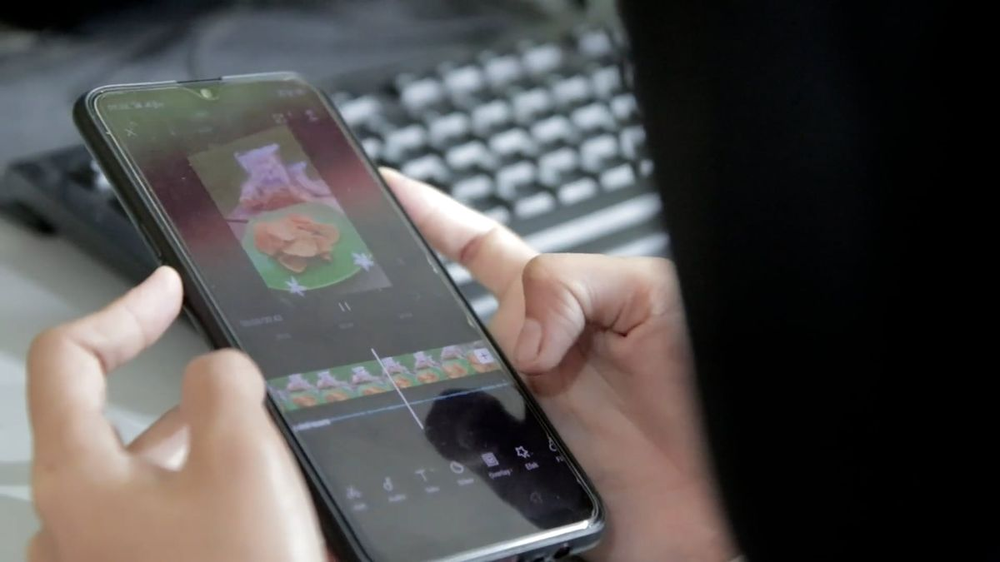
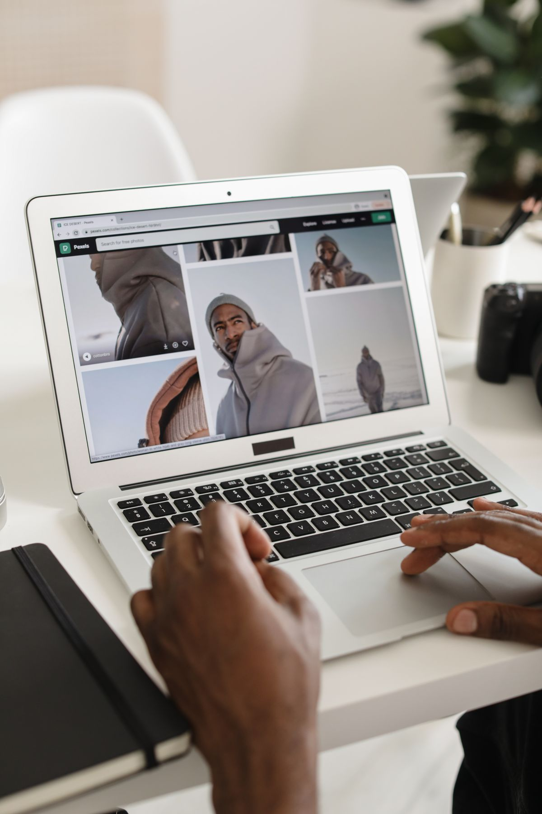

Banyak orang mengira pekerjaan seperti edit foto, hapus background, atau edit video itu selalu butuh aplikasi berbayar. Padahal sekarang ada banyak website yang tampilannya premium, fiturnya serius, tapi versi gratisnya resmi dan cukup untuk kebutuhan sehari-hari. Bukan bajakan, bukan trial 7 hari yang diam-diam menagih kartu kredit. Betul-betul gratis, dengan batas yang wajar dan ditulis jujur di artikel ini.
Daftar di bawah ini dipilih dengan satu syarat: versi gratisnya harus benar-benar kepakai, bukan sekadar umpan supaya kamu upgrade. Kalau ada batas penting, batas itu ikut ditulis supaya kamu tidak kaget di tengah jalan.
1. Photopea, edit foto sekelas Photoshop langsung di browser
Photopea adalah editor foto online yang bisa membuka dan menyimpan file PSD, format yang biasa dipakai di Photoshop. Layer, mask, brush, dan adjustment dasar semuanya ada, dan cara pakainya mirip sekali dengan editor foto profesional. Cocok buat kamu yang sesekali perlu edit foto atau buka file PSD tapi tidak mau langganan aplikasi mahal.
Batas versi gratisnya: ada iklan di sisi layar dan tidak ada riwayat edit tanpa batas seperti versi berbayar. Untuk edit sesekali, batas ini hampir tidak terasa.
2. Canva versi gratis, desain cepat tanpa perlu jago desain
Canva sudah lama jadi andalan untuk bikin poster, presentasi, CV, dan konten media sosial. Versi gratisnya menyediakan ribuan template dan elemen yang cukup untuk kebanyakan kebutuhan sekolah, UMKM, dan konten pribadi. Tinggal ganti teks dan gambar, lalu unduh.
Batas versi gratisnya: elemen bertanda mahkota atau Pro tidak bisa dipakai gratis, dan beberapa fitur seperti penghapus background otomatis terkunci di paket berbayar. Selama kamu memilih elemen yang gratis, hasilnya tetap rapi.
3. CapCut, edit video gratis yang fiturnya tidak pelit
CapCut tersedia sebagai aplikasi dan versi web. Potong video, tambah teks otomatis, transisi, musik, dan efek dasar semuanya bisa dilakukan gratis. Banyak kreator video pendek mengandalkan CapCut sebagai alat utama mereka, jadi kualitas hasilnya tidak perlu diragukan untuk kelas gratis.
Batas versi gratisnya: sebagian efek, transisi, dan template ditandai Pro dan tidak bisa diekspor gratis. Perhatikan tanda itu sebelum memakai sebuah efek, supaya tidak kecewa saat menekan tombol ekspor.

4. remove.bg, hapus background foto dalam sekali klik
Kamu unggah foto, dan background-nya hilang otomatis dalam beberapa detik. Hasilnya bersih, termasuk untuk rambut dan tepian yang rumit. Ini alat yang paling sering dicari penjual online dan pembuat foto produk, karena pekerjaan yang dulu butuh waktu lama di editor foto sekarang selesai dalam sekali klik.
Batas versi gratisnya: unduhan gratis berukuran kecil (ukuran pratinjau). Resolusi penuh butuh kredit berbayar. Untuk foto profil dan kebutuhan layar, ukuran gratisnya biasanya sudah cukup.
5. iLovePDF, semua urusan PDF dalam satu tempat
Gabung beberapa PDF jadi satu, pisahkan halaman, kompres ukuran file, ubah PDF ke Word atau sebaliknya. Semua pekerjaan PDF yang paling sering dicari orang ada di iLovePDF dan bisa dipakai gratis langsung dari browser, tanpa install apa pun. Ini salah satu website yang paling sering menyelamatkan orang di menit terakhir sebelum deadline.
Batas versi gratisnya: ada batas ukuran file dan jumlah dokumen yang diproses dalam satu waktu. Untuk dokumen biasa, batas itu jarang menyentuh.
6. Google Drive dan Google Docs, kantor gratis 15 GB
Setiap akun Google mendapat ruang penyimpanan gratis 15 GB di Google Drive, lengkap dengan Docs, Sheets, dan Slides untuk mengetik, menghitung, dan presentasi. Keunggulan terbesarnya adalah kolaborasi: beberapa orang bisa mengedit dokumen yang sama dalam waktu bersamaan, lengkap dengan komentar. Untuk tugas kelompok dan kerja tim kecil, ini sulit dikalahkan oleh layanan gratis lain.
Batas versi gratisnya: ruang 15 GB itu dipakai bersama oleh Drive, Gmail, dan Google Photos. Kalau sering menyimpan video besar, ruangnya akan terasa cepat penuh.
7. Pexels dan Pixabay, stok foto dan video gratis untuk kontenmu
Butuh foto bagus untuk presentasi, blog, atau konten jualan? Pexels dan Pixabay menyediakan ribuan foto dan video stok yang bisa dipakai gratis, termasuk untuk keperluan komersial, tanpa harus membeli lisensi per gambar. Kualitas koleksinya jauh di atas gambar acak hasil pencarian biasa.
Batas versi gratisnya: hampir tidak ada untuk pemakaian wajar. Tetap baca ketentuan lisensi masing-masing situs, dan hindari memakai foto orang yang bisa disangka sebagai dukungan terhadap produkmu.

Cara membedakan gratis beneran dan jebakan trial
Terakhir, satu kebiasaan yang menyelamatkan dompet: kalau sebuah layanan meminta nomor kartu kredit hanya untuk memulai "uji coba gratis", itu bukan gratis beneran, itu trial yang siap menagih otomatis. Semua website di daftar ini bisa dipakai tanpa memasukkan kartu apa pun. Dan kalau suatu hari salah satunya berubah kebijakan, kolom komentar terbaik tetap sama: cek halaman harga resminya sebelum memasukkan data pembayaran.
Punya website gratis andalan yang belum masuk daftar? Rubrik Other terbit setiap hari dan daftar seperti ini akan diperbarui berkala. Simpan halaman ini, dan sampai jumpa di artikel besok.
← Kembali ke Other